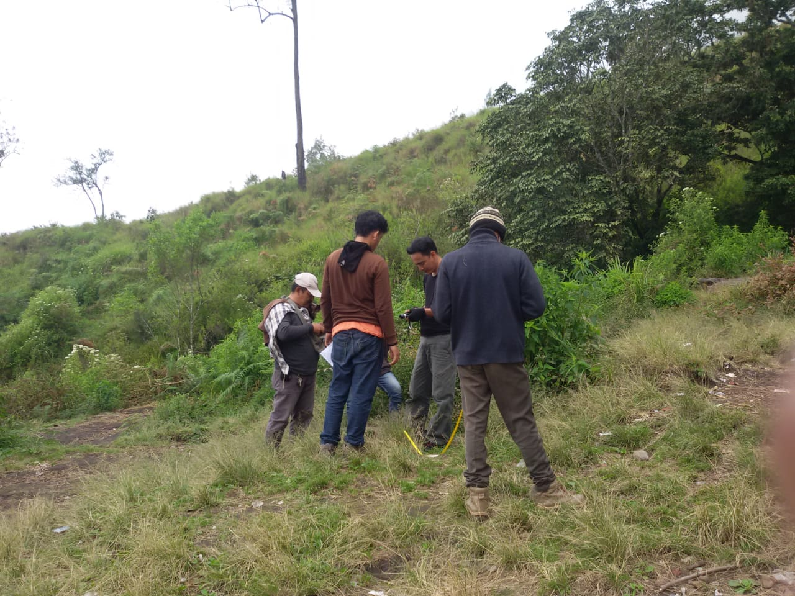
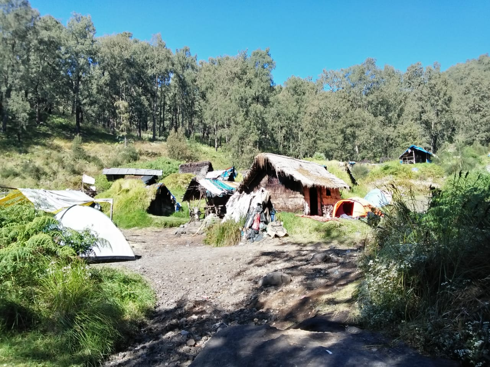

JALUR PENDAKIAN VIA TRETES
Jalur pendakian Gunung Arjuno via Tretes, rute dari Malang dan Surabaya langsung menuju Pandaan. Kemudian dari terminal Pandaan atau pasar buah bisa dilanjutkan naik angkot atau ojek menuju Tretes. Lokasi basecamp ada di seberang Hotel Tanjung. Pendakian yang melalui Tretes adalah jalur yang sering dilalui pendaki karena dari jalur tersebut bisa sekalian mendaki ke Gunung Welirang.
Kontak
- 0815 54432204 (M JUNAEDI)
- 0812 34525948 (AGUS BUDI)
Basecamp
[foto basecamp Tretes]
Basecamp - Pos 1 Pet Bocor (20 Menit)
Jalur sampai ke pos terakhir Gunung Arjuno sama dengan jalur ke Gunung Welirang. Dari basecamp sampai ke pos 1 - Pet bocor, membutuhkan waktu sekitar 20 menit dengan jalan makadam tersusun rapi yang menanjak, cukup membuat lelah. Sampainya di pertigaan beloklah ke arah kiri menuju ke Pos 1. Di pos 1 tersedia warung kecil yang bisa digunakan istirahat sambil menikmati makanan dan minuman yang dijual disana.
[foto pos 1 pet bocor]
Pos 1 Pet Bocor - Pos 2 Kokopan (3 Jam)
Dari Pos 1 menuju Pos 2 kokopan, memerlukan waktu sekitar 3 jam dengan jalur bebatuan yang tidak tersusun rapi karena di sepanjang jalur ini sering dilewati hardtop untuk mengangkut belerang. Jalur bebatuan yang berliku akan terus berlanjut sampai Pos 2 Kokopan.
Pos 2 - Kokopan lumayan luas untuk camp. Ada sumber mata air dan warung kecil untuk beristirahat. Bisa dibilang, logistik aman sampai Pos 2 ini.

Pos 2 Kokopan - Pos 3 Pondokan (3 Jam)
Dari Pos 2 - Kokopan ke Pos 3 - Pondokan, diperlukan sekitar 5 jam dengan jalur yang masih sama, menanjak dan berbatu. Dan dijalur ini pula dikenal adanya Tanjakan Asu atau Tanjakan Naga, jalur terjal menanjak yang panjang dan cukup melelahkan sebelum masuk ke Alas Lali Jiwo. tiba di Pos 3 - Pondokan, yang ditandai dengan adanya rumah-rumah kecil tempat menyimpan belerang. Di dekat rumah penyimpanan belerang ini ada sungai tempat sumber air namun lokasi untuk menuju sumber air cukup kotor.

Pos 3 Pondokan - Lembah Kijang (20 Menit)
Melanjutkan pendakian ke puncak Gunung Arjuno, Lokasi camp yang nyaman bisa di Pondokan atau Lembah Kijang. Jika ingin camp di Lembah Kijang, dari pondokan ikuti jalur sampai persimpangan. Beloklah ke kiri melewati jalur sempit, ke arah puncak hingga sampai di Lembah Kijang dengan pemandangan rerumputan luas dan yang pasti, tanpa kijang. Dulu di area ini memang banyak kijang sehingga dinamakan Lembah Kijang. Seiring berjalannya waktu karena perburuan liar atau karena lokasi ini mulai sering dijamah manusia seperti pendaki, penambang dan pemburu, jarang ditemukan kijang di 'area'nya' lagi.
[foto lembah kidang]
Lembah Kijang - lembah Lali Jiwo (15 Menit)
Meski nyaman untuk camp, lokasi Lembah Kidang tidak seluas Pos 3 - Pondokan. Tak jauh dari Lembah Kijang bisa langsung menuju ke Sabana 2, tempat camp yang dekat dengan sumber air kecil dengan area yang sama dengan Lembah Kidang, tidak terlalu luas. Menuju Sabana 2 hanya membutuhkan waktu sekitar 15 menit.
[foto lembah lali jiwo]
Lembah Lali Jiwo - Puncak Arjuno (2 Jam 45 Menit)
Perjalanan menuju ke puncak Gunung Arjuno tergolong berat karena harus melipir ke sisi kanan gunung. Setelah melipir harus naik-turun 3 bukit untuk sampai ke puncak Gunung Arjuno. Jalur pendakian terus menanjak tiada ampun, melewati padang rumput dan hutan pinus sampai bukit pertama. Dari puncak bukit sudah tampak Puncak Arjuno di belakang 2 bukit lagi.
Puncak Gunung Arjuno berupa tumpukan bebatuan besar yang disebut dengan Puncak Ogal-Agil. Disebut Ogal-Agil karena di puncaknya ada sebuah batu besar yang jika dilihat sekilas tampak akan jatuh jika tertiup angin sedikit saja. Dari puncak Arjuno tampak juga puncak Gunung Semeru dan juga puncak Gunung Welirang.


Tips Pendakian Gunung Arjuno via Tretes :
- Gunakan Peralatan dan Perlengkapan Mendaki Gunung yang lengkap untuk kenyamanan dan keamanan.
- Warung di Pet Bocor buka sepanjang hari, sedangkan warung di Kop-kop'an biasanya buka hanya di akhir pekan, jadi pertimbangkan untuk logistik.
- Sumber air bersih ada di pos Kop-kop'an dan savana 2, sedangkan sungai tempat untuk mengambil air di Pondokan sangat kotor meski sumber airnya bersih. Jangan menambahi dengan membuang sampah di sungai.
- Sumber air terakhir ada di Pondokan dan Savana 2.
- Tidak disarankan untuk camp di Pasar Setan karena berupa area terbuka dan tidak ada sumber air.
- Untung menghindari tersesat, berilah tanda di jalur yang sudah dilewati.
- Segera turun jika cuaca buruk.
Sumber :
- http://infopendaki.com/jalur-pendakian-gunung-arjuno-via-tretes/
- https://www.manusialembah.com/2015/02/pendakian-gunung-arjuna-3339-mdpl-tretes.html/